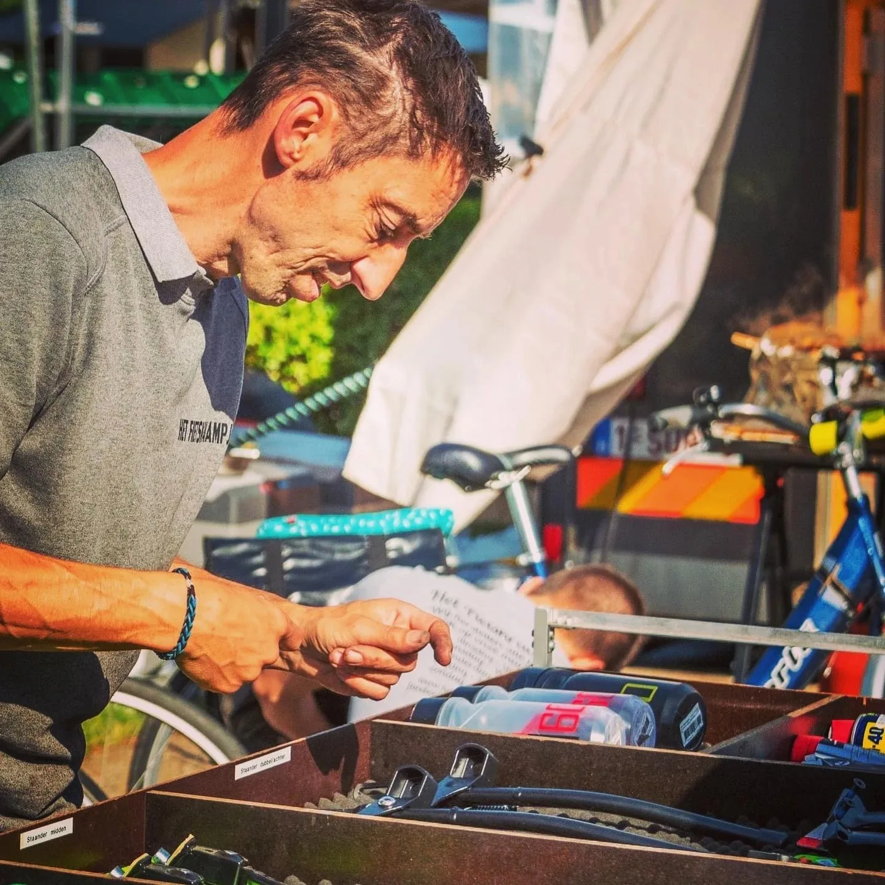
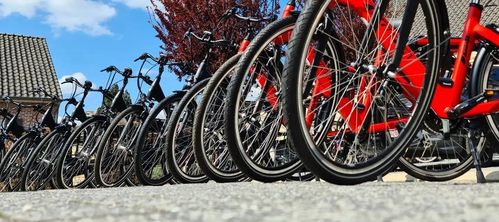
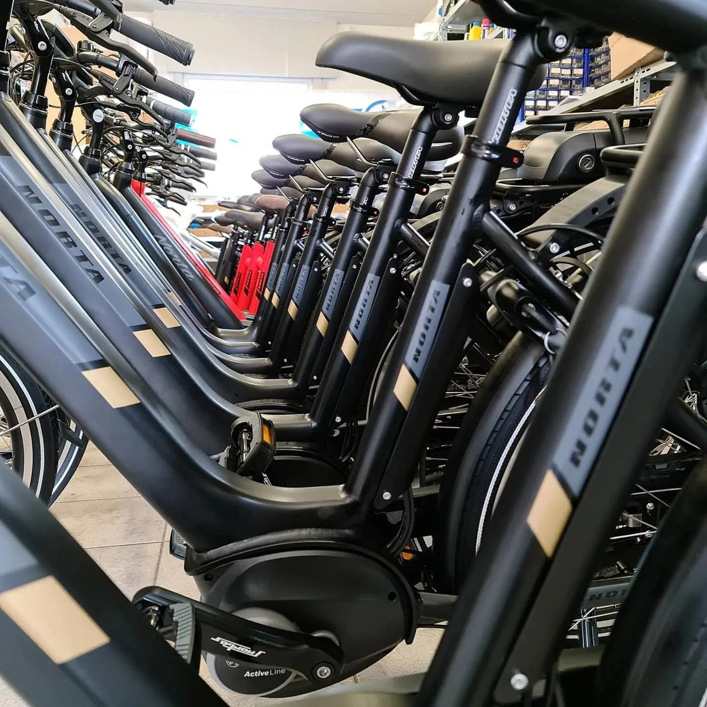

Waar staan we
deze week?
Vijf markten per week, altijd op dezelfde dag. Je herkent ons aan de lange donkerblauwe tent vol banden en onderdelen.
- DinsdagGeel
- WoensdagWesterlo
- DonderdagOlen Centrum
- VrijdagHerentals
- ZondagHerentals
- Di, do, zaWerkhuis in Ten Aard, Pierenstraat 7

Herstellen
Elk merk. Ook als je hem niet bij ons kocht.
Stadsfiets of e-bike, om het even van welk merk: we kijken ernaar. We herstellen op de markt en in ons werkhuis in Ten Aard.
Aan het kraam vind je ook bijna elk onderdeel, en fietstassen, fietscomputers en zadelhoezen.

Zonder afspraakKom gewoon langs op de markt of in het werkhuis.
Snel terugWe herstellen zo vlug als het kan, zodat je je fiets niet lang mist.
AttestenOpgeleid voor Bosch, Enviolo, NuVinci en TranzX.
Eerlijke rekeningGeen dure factuur voor een studentenfiets, wel degelijk werk aan je e-bike.

Fietsen
Nieuw van Norta, of tweedehands.
NortaWij zijn officieel verdeelpunt. E-bikes en stadsfietsen, je bekijkt de modellen op norta.be en bestelt bij ons.
TweedehandsFietsen die aan de kant stonden, zetten we terug in orde en verkopen we verder. Bel even om te horen wat er nu staat.
Het werkhuis
Geen marktdag? Kom naar Ten Aard.
Ons werkhuis ligt in de Pierenstraat in Geel. Ook hier kom je gewoon binnen, zonder afspraak.
| Dinsdag | 13u30 tot 17u |
| Donderdag | 13u30 tot 17u |
| Zaterdag | 9u tot 12u |
Pierenstraat 7, 2440 Geel (Ten Aard)
0497 21 94 05 · peter.wouters110@telenet.be